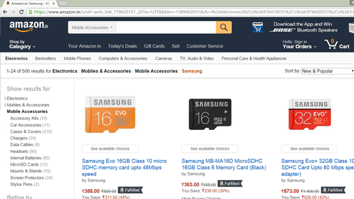
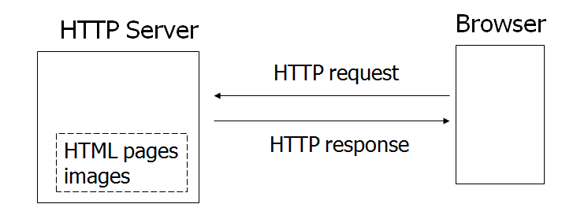

1.1 Introduction to Web Application
The term web application refers to a software system that provides a user interface through a web browser. Examples of web applications include blogs, online shopping, search engines, etc.

Web applications can be simple consisting of only static web pages or they can be dynamic and interactive.
Static web pages are stored in the file system of web server usually displays the same information to all visitors. Whereas dynamic pages are constructed by a program that produce the HTML. This type of web application provide individual information to the user and let them personalize the content according to their preferences.
How the (static) web work?
We already know that to open a web page we enter URL or click on link and web browser displays web page that we request. Let's discuss the steps that happen behind the scene.
- The user enters a URL in the browser.
- The browser sends a request to the web server over the internet.
- Web Server examines the request and based on the request server finds the requested page already stored in its local drive.
- Web Server sends the response to the web client (browser).
- Browser gets the HTML and renders it into a display for the user.

The request and response communications over the internet between client and server are held using the HTTP protocol. That's why the server is often called as HTTP server. When a server answers a request, the server usually sends some type of content to the browser so that the browser can display it. Servers often send the browser a set of instructions written in HTML. HTTP uses URLs (Uniform Resource Locator) to identify data on the Internet.
In the next section, we'll cover URL and HTML in details.